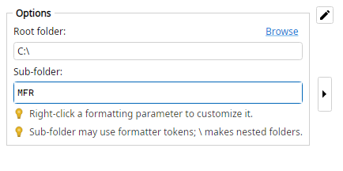

Moves items to a destination folder by combining a required root folder with an optional dynamic sub-folder template.
Only the preview parent directory changes here; folders are created and items moved on Apply. Source folders are never deleted.
Root C:\Music; sub-folder <parent-folder>
C:\Downloads\Junkies >>> C:\Music\Junkies
Root C:\Archive; sub-folder <now:yyyy>
C:\Inbox >>> C:\Archive\2026